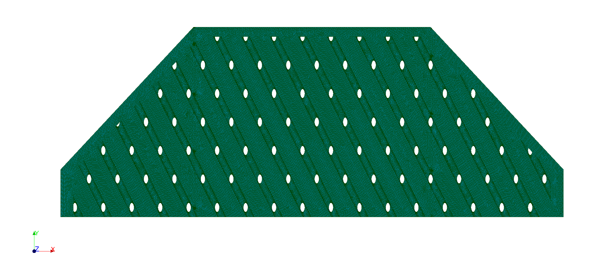
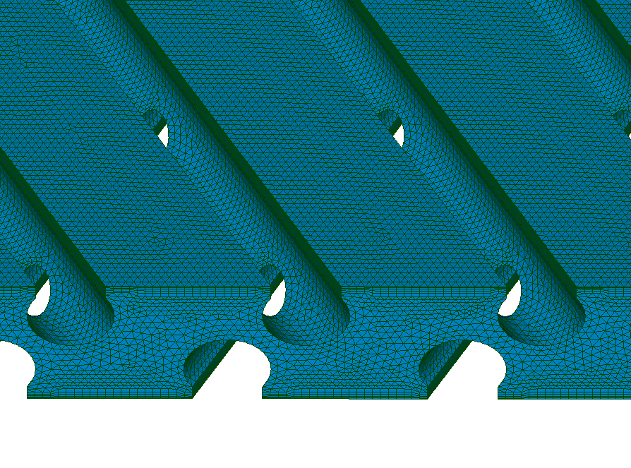

Separation meshing in Salome
Procedure:
- Load next geometry part
- Project mesh boundary
- Mesh second part

"Thick and even"
"Thin and elongated"
"We've got all angles covered."
"We know you like shapes."
"We have eyes for detail!"
"Get it at your local FOSS retailer!"
SIGSEGV segmentation violation detected address 30SIGSEGV segmentation violation detected address 298SIGSEGV segmentation violation detected address 1030SIGSEGV segmentation violation detected address 4560SIGSEGV segmentation violation detected address 10987SIGSEGV segmentation violation detected address 29876
Salome does not cope well with large meshes (>20M)
Separation in Salome, merging in OpenFOAM (2 options)
Separation in Salome, merging in OpenFOAM (2 options))
→ Focus on option 2
Goal (rough mesh for demo):
Goal (rough mesh for demo):
Procedure:
Procedure:
Procedure:
Procedure:
Procedure:
mergeMesh mesh1 mesh2 -overwritestitchMesh patch1 patch2mergeMesh mesh1 mesh3 -overwritestitchMesh patch2 patch3
"Get it at your local FOSS retailer!"